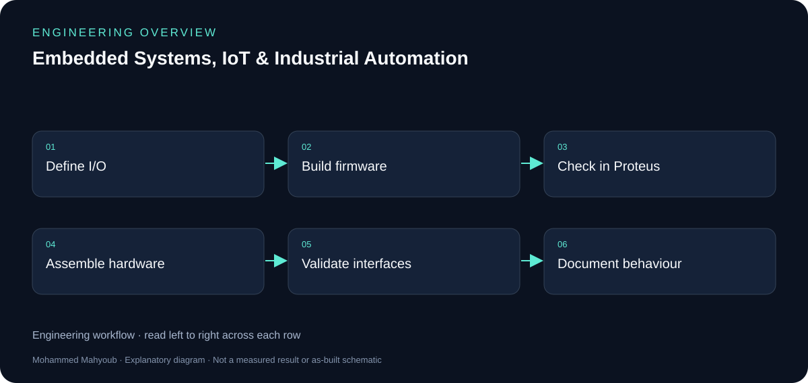

Embedded Systems · IoT · Industrial Automation
Embedded Systems, IoT & Industrial Automation
Designed and prototyped embedded monitoring and control solutions using microcontrollers, sensors, communication modules, actuators, and PLC platforms.
System overview

Author
Mohammed Mahyoub
Scope
Real-time monitoring and control systems, sensor integration, telemetry, hardware configuration, functional testing, and technical validation.
Firmware
PIC16 firmware in mikroC, simulated in Proteus and built on hardware: multiplexed 7-segment displays, ADC measurement with Timer0 interrupts, EEPROM storage, DS1307 RTC over I²C, 74HC595 shift registers, keypad/LCD access control with alarm, and Nokia 5110 graphic LCD.
Devices
IC and memory programming: ROM/PROM/EPROM/EEPROM/Flash, SRAM/DRAM/NV-RAM organisation, and hardware device programmers.
Engineering rationale
Peripherals and timing
The documented PIC16 work includes multiplexed displays, ADC measurements with Timer0 interrupts, EEPROM persistence, a DS1307 clock over I2C, 74HC595 shift registers, keypad/LCD access control and a Nokia graphic LCD. Timing, pin allocation and shared interfaces make these useful integration examples.
Hardware validation
Proteus supports development before hardware assembly; the public scope also records hardware implementation and functional testing. New diagrams group the techniques by responsibility and do not imply that every peripheral was installed in one circuit.
Authorship and reuse
The training archive includes third-party code, libraries and device models. Mohammed applied and developed on those techniques, including hardware work. This documentation credits the training origin and does not republish the pack as original source code.

Evidence and validation
Suggested evidence checks for reviewing this work. These are not claimed pass results.
- Pin map and electrical interface assumptions
- Timer/ADC/peripheral behaviour
- EEPROM persistence and clock/display output
- Hardware observations with training attribution
Source gallery
Figures from the existing project repository, public notebook outputs, or corresponding LinkedIn project media. Original screenshots and existing explanatory figures retain their source context.